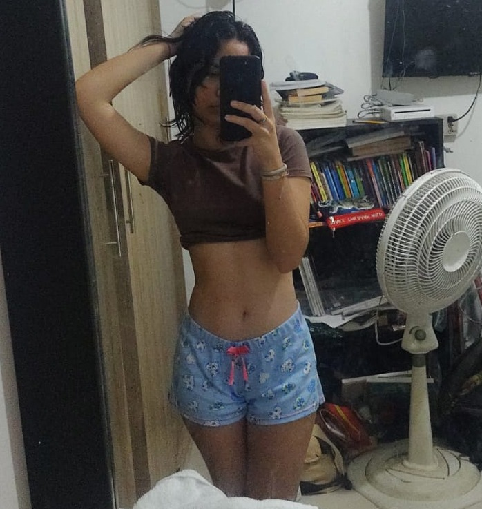

Su cuerpito es como el de una guitarra, pero primero hablemos de su cintura.
Su cintura es delgada y con una figura que la hece ver demasiado hermosa, con esa curva
suave que la hace parecer muy femenina y atractiva. Es proporcional a su cuerpo y resalta
su figura de una manera muy elegante y armoniosa. Cada vez
que la veo, no puedo evitar sentirme fascinado por su belleza y su gracia natural.
Realmente María tiene una cintura muy hermosa

Su cadera
Ahora hablemos de la cadera de María; ya que es otra de las cosas divinas que tiene esta chica. Es simplemente hermosa, con una curva suave y bien
definida que se ajusta perfectamente a su cuerpo. Es una característica muy femenina
que realza su figura y la hace lucir muy como toda una diosa ante mis ojos. Cada vez que se ve en las fotos resalta su cadera o cuando usa ropa ajustada,
no puedo evitar admirar la forma. Sin duda, Realmente tiene una cadera hermosa que es una bendición para los ojos.